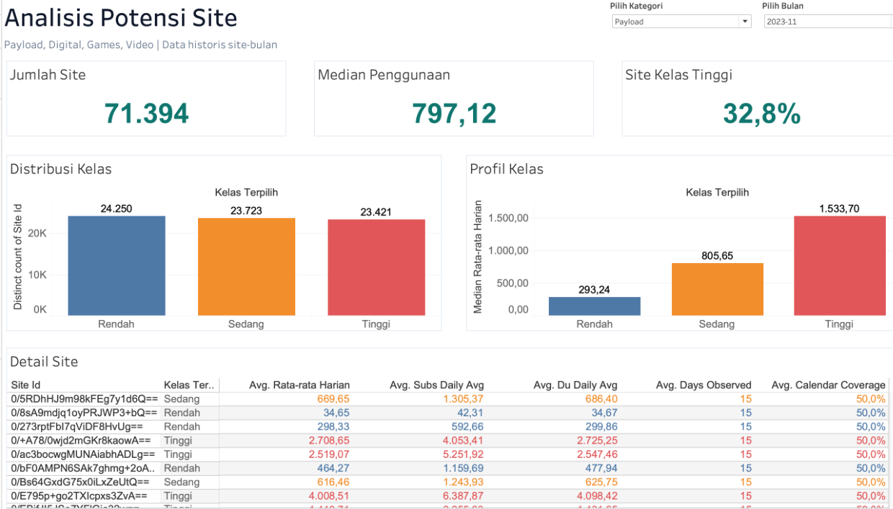

01 / DATA ANALYSIS
Potential Analysis
of Telkomsel Sites
Analysis and Tableau dashboard development to understand network usage patterns and compare the potential of Telkomsel sites. Beginning as an internship project focused on payload, I later expanded it to four categories: payload, digital, games, and video.
More about this project
Background & purpose
This project began during my internship at PT Telkomsel Regional Surabaya from March 3 to April 18, 2025. Its aim was to transform daily traffic data into information by site and month that could be explored more easily, supporting usage pattern evaluation and network optimization considerations.
Initial phase — payload analysis
The internship report focused on classifying payload potential into low, medium, and high classes. Daily data was aggregated by site and month, then used for Extra Trees Classifier modeling with PyCaret and Tableau visualizations. Digital, games, and video metrics were already included as supporting features, but the report’s classification target and dashboard focused on payload.
The report recorded processing more than 10.8 million rows of daily data and an Extra Trees evaluation accuracy of 94.03%. This figure is the reported result for the internship-phase payload model, rather than an evaluation of the four-category version or a guarantee of performance on new data.
Latest development — four categories
I expanded the analysis to review payload, digital, games, and video as separate categories. In this version, low, medium, and high classes are defined using separate tertiles of each metric’s daily average per site-month. The results show the relative position of site usage within each category.
Processing workflow & contributions
- Audited source data and prepared site-month metric aggregates using Python, Pandas, and NumPy.
- Created classifications for each category, class profiles, and distribution and trend charts with Matplotlib.
- Prepared analysis outputs and developed a Tableau dashboard for exploring categories, months, and site details.
- Prepared an insight report, class threshold sensitivity checks, and notes on data limitations.
Latest dashboard features
- Filters for payload, digital, games, or video categories and month selection.
- Summaries of site counts, median usage, and the percentage of high-class sites.
- Site count distribution charts and comparisons of low, medium, and high class profiles.
- A site detail table with class, average metric values, observation day counts, and calendar coverage.
Results & interpretation
The dashboard helps compare usage characteristics across sites and categories, while the report and supporting charts provide context for historical changes. Potential classes in the latest version describe observed relative usage; they do not predict future demand or establish unmet capacity needs. Differences in observation day coverage and metric definitions should be considered when drawing conclusions.